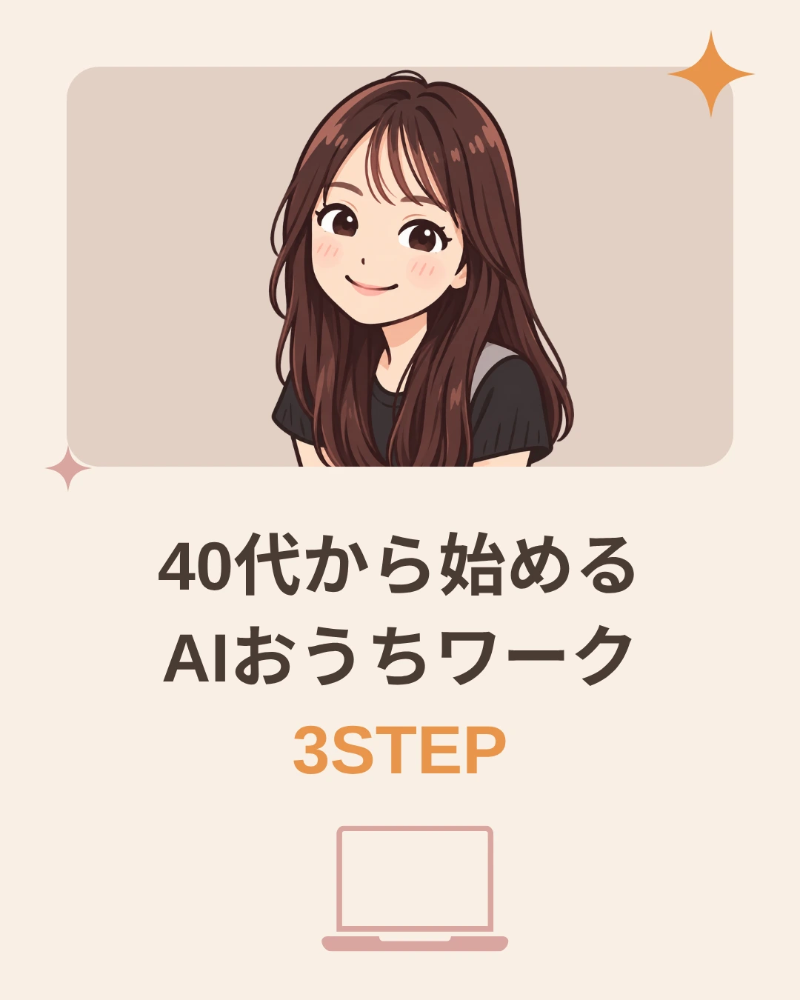
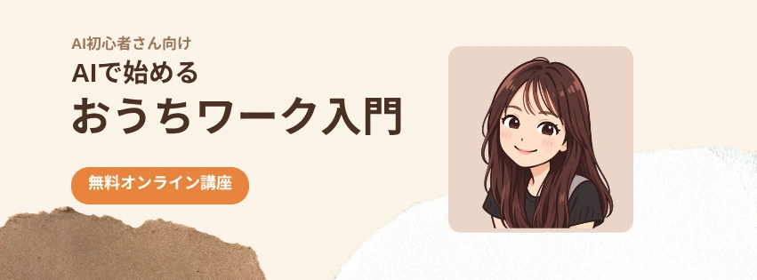

AI初心者さん向け
Claude×Canva
連携 完全ガイド
画像の土台を作って、
Canvaで仕上げる実践手順
ClaudeとCanvaを連携すると、Claudeにお願いしたデザイン案を、そのままCanvaで開いて編集できます。
このガイドでは、詳しい連携方法から、用途別のコピペ用プロンプト、実際に試して分かった修正ポイントまでまとめました。
さっそく連携してみるClaude×Canvaでできること
ClaudeとCanvaを連携すると、チャットで指示を出してデザイン案を作り、気に入ったものをCanvaで開けます。
作成できるデザインの例は次のとおりです。
- Instagram投稿の表紙
- 横長バナー
- LPのヘッダー画像
- YouTubeサムネイル
- プレゼンテーションなど
生成されたデザインは、Canva上で写真、文字、色、配置を変更できます。
ここが大事なポイントです
Claudeが出したデザインは、基本的に「完成品」ではなく、Canvaで編集するための土台として使うのがおすすめです。
生成結果には、指定していない英語、ダミーURL、意味不明な文字が入ることがあります。必ず内容を確認してから使用してください。
ClaudeとCanvaの連携方法
補足
画面の名称や配置は、使用端末、プラン、機能更新によって変わる場合があります。
Canvaが表示されない場合は、ClaudeとCanvaの両方へ正しいアカウントでログインしているか確認してください。
文章案で終わらせず、
デザインを作ってもらうコツ
Claudeへ「Instagram投稿を考えて」と伝えるだけでは、文章や構成案だけが返ってくる場合があります。
Canvaのデザインを実際に作ってもらいたい場合は、次の一文を入れてください。
文章や構成案をテキストで回答するのではなく、Canvaコネクタを使用して、Canvaで編集可能なデザインを実際に作成してください。
用途別コピペ用プロンプト
使いたいものを選び、「コピーする」を押してClaudeのチャットに貼り付けてください。
〈 〉の中を書き換えて使います
プロンプトの中の〈 〉は、あなたの内容に置き換える場所です。かっこの中に例を入れてあるので、そこをご自身の言葉に変えてから送ってください。〈 〉ごと消して、自分の言葉だけを残します。
書き換えを忘れたまま送っても、Claudeが「何を入れますか？」と聞き返すよう、プロンプトの中に指示を入れてあります。
5-1．Instagramカルーセル表紙
書き換えるのはここだけ
- 表紙に入れる3行の文字（前置き／いちばん伝えたい言葉／数字やキーワード）
- 読んでほしい人（例：40〜50代女性、子育て中のママ）
- 色と雰囲気（例：ベージュ＋オレンジ、親しみやすく上品）
プロンプト全文をひらく
Canvaを使って、Instagramカルーセル投稿の表紙画像を新規作成してください。 文章や構成案をテキストで回答するのではなく、Canvaコネクタを使用して、Canvaで編集できるデザインを実際に作成してください。 【サイズ】 Instagram縦投稿 1080×1350px、縦4:5 【表紙に入れる文字】 〈1行目：短い前置き（例：40代から始める）〉 〈2行目：いちばん伝えたい言葉（例：AIおうちワーク）〉 〈3行目：数字やキーワード（例：3STEP）〉 【レイアウト】 ・2行目の言葉を最も大きくする ・3行目の言葉は〈目立たせる色（例：オレンジ）〉で目立たせる ・人物または人物イラストを後から配置できる空間を作る ・Instagramのプロフィール一覧でも読める大きな文字にする ・余白を残しながらも、寂しく見えない構成にする 【デザイン】 ・〈基調にする色（例：明るいベージュ）〉を基調にする ・〈アクセントの色（例：オレンジとくすみピンク）〉をアクセントにする ・〈読んでほしい人（例：40〜50代女性）〉向けの、〈雰囲気（例：親しみやすく上品）〉なデザイン ・文字は読みやすい日本語のゴシック体にする 【厳守事項】 ・指定した3つの文章以外は入れない ・英語、URL、ロゴ、ボタン、ブランド名を追加しない ・意味不明な文字やダミーテキストを入れない ・文字をCanvaで編集できる状態にする ・〈 〉が残っている場合は、デザインを作らずに、そこに何を入れるか質問してください レイアウトの異なるデザインを4案作成してください。
実際の結果
「40代から始める／AIおうちワーク／3STEP」と書き換えて作った例です。


補足
生成結果の中から、文字が正確で、編集しやすいレイアウトを選びます。この例では、人物イラスト、文字、パソコンアイコンをCanvaで調整しました。
5-2．告知バナー（横長・正方形・縦長）
書き換えるのはここだけ
- サイズ（下の表から1つ選んで、残り2つは消す）
- 告知したいもの（例：オンライン講座、体験会、新メニュー）
- 掲載する4行の文字（呼びかけ／タイトル前半／タイトル後半／ラベル）
- 読んでほしい人・色・雰囲気
| サイズ | 向いている場所 |
|---|---|
| 横1200×628px | ブログ、X、LINE、案内ページ |
| 1080×1080px（正方形） | Instagramの通常投稿 |
| 1080×1350px（縦長） | Instagramの縦投稿、ストーリーズ |
プロンプト全文をひらく
Canvaを使って、〈告知したいもの（例：AI初心者向けオンライン講座）〉の告知バナーを新規作成してください。 文章や構成案をテキストで回答するのではなく、Canvaコネクタを使用して、Canvaで編集可能なデザインを実際に作成してください。 【サイズ】 〈次の3つから1つだけ残す： 横1200×628px（ブログ・X・LINEなどの横長） 1080×1080px（Instagramの正方形） 1080×1350px（Instagramの縦長）〉 【掲載する文字】 〈1行目：読んでほしい人への呼びかけ（例：AI初心者さん向け）〉 〈2行目：タイトル前半（例：AIで始める）〉 〈3行目：タイトル後半（例：おうちワーク入門）〉 〈4行目：ラベルに入れる言葉（例：無料オンライン講座）〉 【レイアウト】 ・〈横長を選んだ場合：左側に文字を配置し、右側に人物または人物イラストを後から配置できる空間を作る／正方形・縦長を選んだ場合：上側に文字を配置し、下側に人物または人物イラストを後から配置できる空間を作る〉 ・2行目と3行目の文字を最も大きくする ・4行目の文字は〈ラベルの色（例：オレンジ）〉の角丸ラベルに白文字で入れる ・一瞬表示しても文字が読める、太く大きな文字にする 【デザイン】 ・〈基調にする色（例：明るいベージュ）〉を基調にする ・〈アクセントの色（例：オレンジとくすみピンク）〉をアクセントにする ・〈読んでほしい人（例：40〜50代女性）〉向けの、〈雰囲気（例：親しみやすく上品）〉なデザイン ・文字は読みやすい日本語のゴシック体にする 【厳守事項】 ・指定した4つの文章以外は入れない ・英語、URL、ロゴ、日付、価格、ブランド名を追加しない ・意味不明な文字やダミーテキストを入れない ・文字をCanvaで編集できる状態にする ・〈 〉が残っている場合は、デザインを作らずに、そこに何を入れるか質問してください レイアウトの異なるデザインを4案作成してください。
実際の結果
横1200×628pxを選び、オンライン講座の告知として書き換えて作った例です。


補足
生成直後は英語のダミーテキストが入る場合があります。Canvaで正しい日本語へ変更し、人物素材や配色を調整してください。
5-3．LPヘッダー画像応用プロンプト
書き換えるのはここだけ
- 告知したいもの（例：講座、セッション、教室）
- 掲載する4行の文字（呼びかけ／名前／ひとこと説明／ボタンの文字）
- 入れたい写真の種類（例：女性の写真、商品の写真）
- 色と雰囲気
プロンプト全文をひらく
Canvaを使って、〈告知したいもの（例：女性向けオンライン講座）〉のLPヘッダー画像を新規作成してください。 文章や構成案をテキストで回答するのではなく、Canvaコネクタを使用して、Canvaで編集可能なデザインを実際に作成してください。 【サイズ】 横1920×1080px、16:9 【掲載する文字】 〈1行目：読んでほしい人への呼びかけ（例：忙しいママのための）〉 〈2行目：いちばん大きく見せたい名前（例：AIおうちワーク無料講座）〉 〈3行目：ひとこと説明（例：知識ゼロから、自分に合った働き方を見つけよう）〉 〈4行目：ボタンに入れる言葉（例：無料で参加する）〉 【レイアウト】 ・左側にキャッチコピーと説明文を配置する ・右側に〈入れたい写真（例：女性の写真）〉を後から入れられる大きな空間を作る ・2行目の言葉を最も大きくする ・4行目の言葉は〈ボタンの色（例：オレンジ）〉のボタン風デザインにする 【デザイン】 ・〈基調にする色（例：白と明るいベージュ）〉を基調にする ・〈アクセントの色（例：オレンジとくすみピンク）〉をアクセントにする ・〈読んでほしい人（例：女性）〉向けで、〈雰囲気（例：親しみやすく信頼感のある）〉デザイン ・文字は読みやすい日本語のゴシック体にする 【厳守事項】 ・指定した文字以外は入れない ・架空の実績、人数、URL、日付、価格、ロゴを追加しない ・意味不明な文字や英語を追加しない ・文字をCanvaで編集できる状態にする ・〈 〉が残っている場合は、デザインを作らずに、そこに何を入れるか質問してください レイアウトの異なるデザインを4案作成してください。
注意
生成結果によっては、LPヘッダーではなく縦長の商品広告などが表示される場合があります。サイズと内容を必ず確認し、必要に応じてCanvaで修正してください。
5-4．YouTubeサムネイル応用プロンプト
書き換えるのはここだけ
- 動画のジャンル（例：AI初心者向け、料理、片づけ）
- 2行のタイトル（誰の話か／いちばん伝えたいこと）
- 最も目立たせたい言葉と色・雰囲気
プロンプト全文をひらく
Canvaを使って、〈動画のジャンル（例：AI初心者向けYouTube動画）〉のサムネイルを新規作成してください。 文章やタイトル案をテキストで回答するのではなく、Canvaコネクタを使用して、Canvaで編集可能なデザインを実際に作成してください。 【サイズ】 1280×720px、16:9 【掲載する文字】 〈1行目：誰の話か（例：40代主婦）〉 〈2行目：いちばん伝えたいこと（例：AIで働き方が変わった）〉 【レイアウト】 ・左側にタイトルを大きく配置する ・右側に表情のある〈人物（例：女性）〉の写真を後から入れられる空間を作る ・〈最も目立たせたい言葉（例：AI）〉を最も目立たせる ・スマートフォンの小さな画面でも読める文字サイズにする 【デザイン】 ・〈基調にする色（例：ベージュ）〉を基調にする ・〈アクセントの色（例：オレンジとくすみピンク）〉をアクセントにする ・親しみやすいが、クリックしたくなるメリハリのあるデザイン ・文字は太く読みやすい日本語のゴシック体にする 【厳守事項】 ・指定した2つの文章以外は入れない ・英語、URL、ロゴ、日付、価格、ブランド名を追加しない ・意味不明な文字やダミーテキストを入れない ・文字をCanvaで編集できる状態にする ・〈 〉が残っている場合は、デザインを作らずに、そこに何を入れるか質問してください レイアウトの異なるデザインを4案作成してください。
注意
使用前に、タイトルが正しいこと、人物素材が不自然でないこと、小さな画面でも読めることを確認してください。
生成結果がうまくいかないとき
当てはまるものをひらいて、中の文をコピーし、そのままClaudeへ送ってください。
文章案だけ返ってきた場合
文章案ではなく、Canvaコネクタを使用して、Canvaで編集可能なデザインを実際に作成してください。
英語やダミーURLが入った場合
指定した日本語以外の文字をすべて削除してください。英語、ダミーURL、ロゴ、ブランド名は追加しないでください。
日本語が文字化けした場合
意味不明な文字を削除し、指定した日本語を正確に入力してください。読みやすい日本語のゴシック体を使用してください。
写真を入れる場所がない場合
文字や装飾を左側へ移動し、右側に人物の切り抜き写真を配置できる十分な空間を作ってください。
サイズが違う場合
現在の内容を維持したまま、横1200×628pxのバナーとして作り直してください。縦長にはしないでください。
Canvaで仕上げるポイント
タップでチェックを付けたり外したりできます。
Canva上の修正も
AIにお願いする方法
Claude in Chromeを利用できる環境では、Canvaで開いたデザインの文字変更、配色調整、写真の差し替えなどを依頼できる場合があります。
今回の完成例では、Claude×Canvaで土台を作成したあと、Canva上の修正をClaude in Chromeへ依頼しました。
修正用プロンプト例
プロンプト全文をひらく
現在Canvaで開いているデザインを直接編集してください。 ・指定した日本語以外の文字を削除 ・タイトルを太い日本語ゴシック体に変更 ・タイトルを濃い茶色に変更 ・重要な言葉をオレンジで強調 ・写真スペースに指定した人物素材を配置 ・全体をベージュ、茶色、オレンジ、くすみピンクで統一 ・URL、英語、ロゴ、新しい文章は追加しない デザイン全体を作り直さず、現在のレイアウトを活かして調整してください。
注意事項
Claude in Chromeの提供状況、利用条件、操作できる範囲は、アカウントや時期によって異なる場合があります。
利用できない人は、同じ修正をCanva上で手動で行ってください。
AIに全部任せるのではなく、
得意な部分を任せよう
Claude×Canvaは、何もない状態からデザインの土台やアイデアを作るときに活用できます。
生成されたデザインを確認し、写真、文字、色をCanvaで自分好みに整えることで、SNS投稿やバナー制作などに活かせます。
まずは、このガイドのプロンプトをコピーして、Instagram投稿の表紙から試してみてください。
AIを上手に取り入れて、できることの幅を少しずつ広げていきましょう。
もっとAIを活かしたい方へ
デザインづくりに慣れてきたら、次は「AIを使って何ができるか」を広げてみませんか。
無料オープンチャット
みおんの㊙️AIマネタイズ部屋
AIを使って、仕事や収入の可能性を広げたい人のためのオープンチャットです🤫
AI初心者さんにもわかりやすく、お家でできる仕事のヒントや、ここでしか話さない㊙️情報をお届けします。
「AI、気になるけど
何から始めればいい？」
「自分にもできる方法を
見つけたい！」
そんな方は、ぜひ参加してください☺️
オープンチャットに参加する
参考情報・免責事項
- 本ページは2026年9月15日時点の情報と実際の検証結果をもとに作成しています。
- ClaudeおよびCanvaの画面、名称、機能、利用条件は変更される可能性があります。
- 生成されるデザインの品質や内容は毎回異なります。
- AIが生成した文字、URL、人物、商品情報は必ず確認してください。
- 商用利用する場合は、利用する素材、画像、フォント、各サービスの最新利用規約を確認してください。
- 本ガイドは特定の収益や仕事の獲得を保証するものではありません。
- Claude in Chromeの利用可否と対応機能はアカウントによって異なる可能性があります。
参照リンク
-
Canva AI Connector
https://www.canva.com/ai-connector/ -
Canva AI Connectorヘルプ
https://www.canva.com/help/mcp-agent-setup/ -
Claude公式ヘルプ
https://support.anthropic.com/